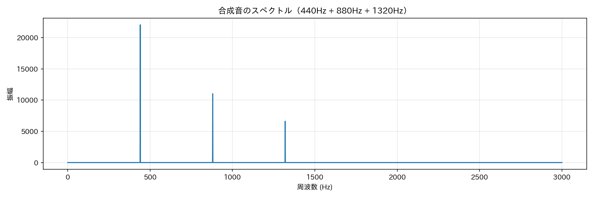
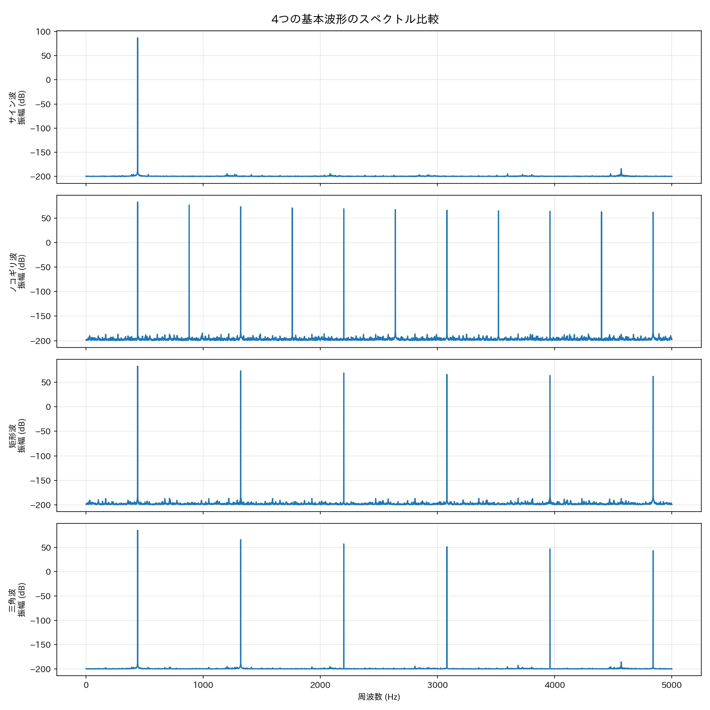
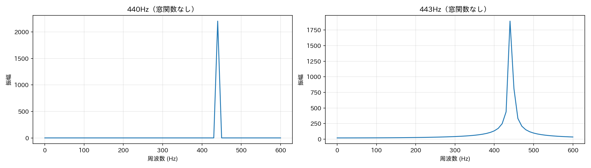
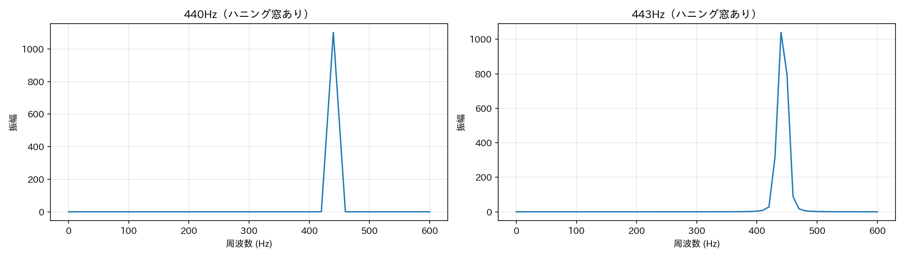
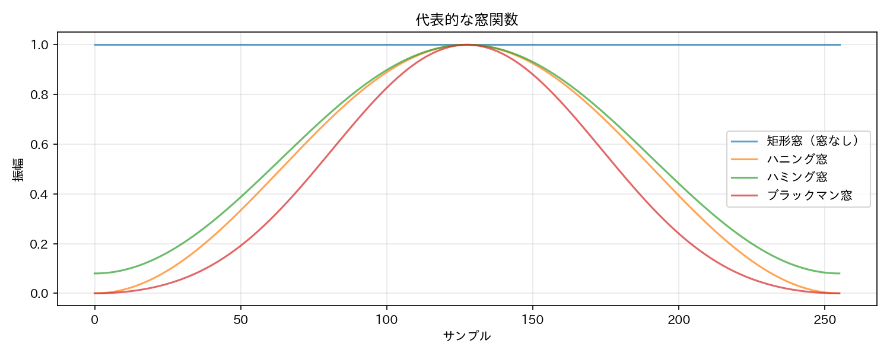
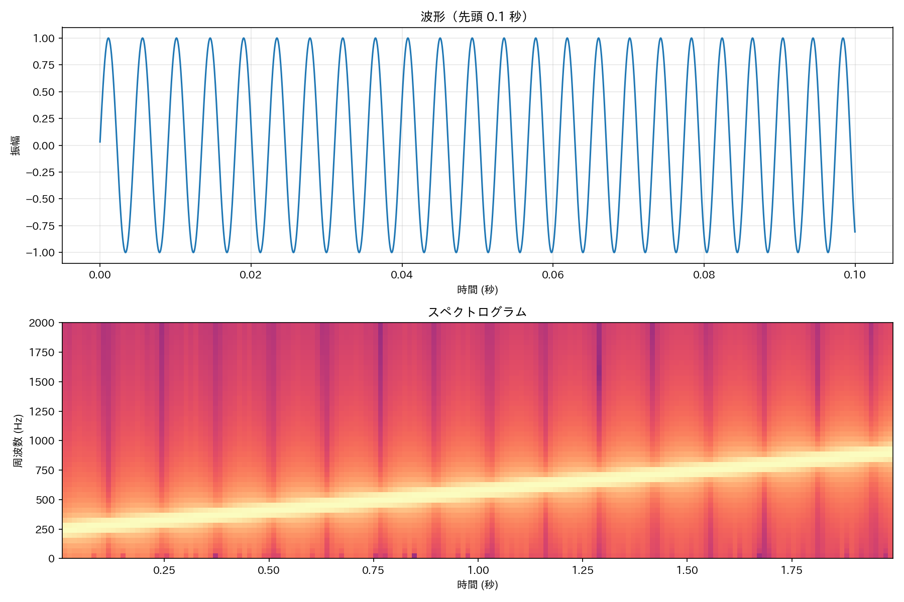
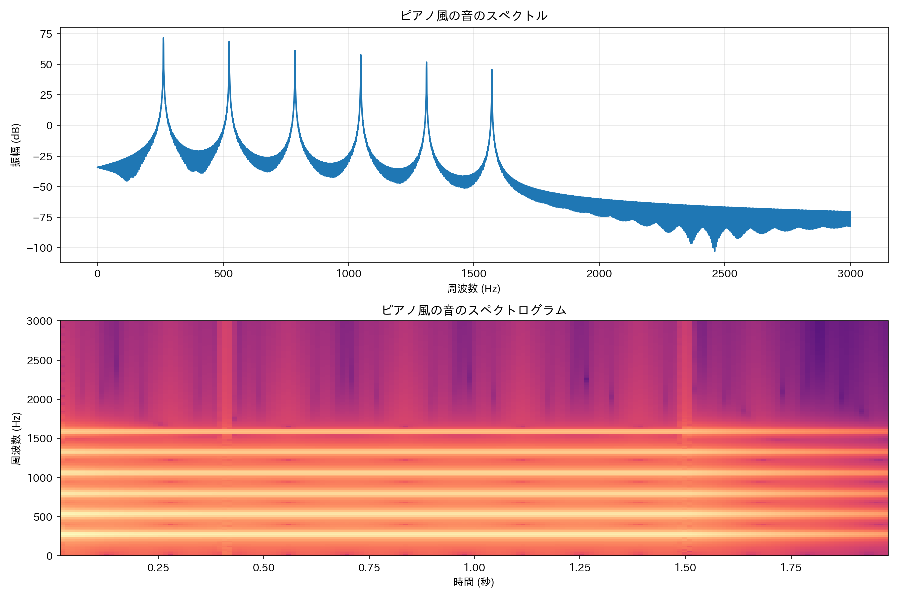
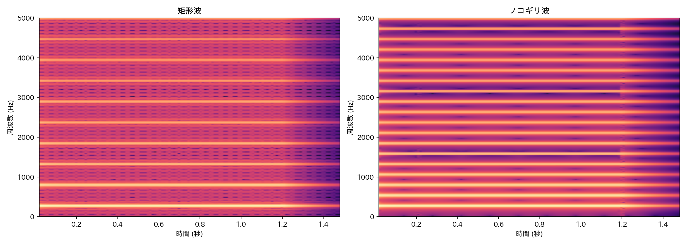
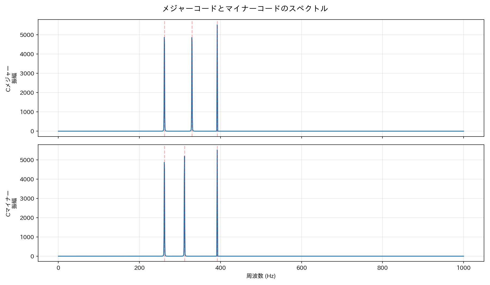
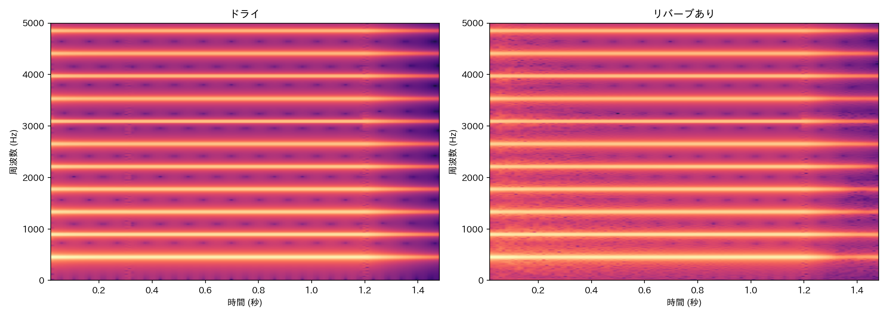

Lesson 13: 音を周波数で見る¶
このレッスンで学ぶこと¶
- FFT（高速フーリエ変換）の直感的な意味を理解する
- スペクトルの読み方を学び、音色の違いを周波数の視点で説明できるようになる
- スペクトログラムで「時間とともに変化する周波数」を可視化する
- 楽器音や合成音の周波数分析を実践する
- 窓関数がなぜ必要かを直感的に理解する
Lesson 4 では「サイン波を足し合わせて音色を作る」加算合成を学び、最後に「plot_spectrum() の中身はフーリエ変換」と予告しました。あれから多くのレッスンを経て、エンベロープ、エフェクト、リズムと、さまざまな角度から音を扱ってきました。このレッスンでは、いよいよフーリエ変換を正面から取り上げ、音を周波数で「見る」力を身につけます。
セットアップ¶
新しいノートブックを開き、最初に Lesson 1 と同じセットアップセル（audio_lib のインストールと setup_environment()）を実行してください。続けて、今回使うライブラリを読み込みます。
import numpy as np
import matplotlib.pyplot as plt
from IPython.display import display
from audio_lib import (
sine_wave, sawtooth_wave, square_wave, triangle_wave,
additive_synth, adsr, AudioSignal,
)
from audio_lib.notebook import play_sound, plot_waveform, plot_spectrum
13.1 加算合成の「逆」を考える¶
Lesson 4 では、サイン波を足し合わせて複雑な音色を作りました。
f0 = 440
sig = additive_synth(f0, {1: 1.0, 2: 0.5, 3: 0.33, 4: 0.25, 5: 0.2})
display(play_sound(sig, "加算合成（5つの倍音）"))
この音には「440Hz を振幅 1.0、880Hz を振幅 0.5、…」というレシピがあります。レシピを知っているから作れたわけですが、逆に出来上がった音からレシピを読み取ることはできるでしょうか？
これがまさに周波数分析（frequency analysis）です。波形という「時間の世界」の情報を、「周波数の世界」に変換して、どんなサイン波がどれだけ含まれているかを調べます。
Lesson 4 で学んだ合成と、このレッスンで学ぶ分析は、表裏一体の関係です。
13.2 FFT — コンピュータによる周波数分析¶
波形をサイン波の成分に分解するアルゴリズムがフーリエ変換（Fourier transform）です。コンピュータで高速に計算するバージョンを FFT（Fast Fourier Transform、高速フーリエ変換）と呼びます。
FFT の数学的な詳細には踏み込みませんが、やっていることの本質はシンプルです。
FFT は、波形データを受け取り、「どの周波数がどれだけの強さで含まれているか」のリストを返す。
料理のたとえで言えば、完成した料理（波形）を味見して「塩がこれくらい、砂糖がこれくらい、…」と材料の配合（周波数成分）を推定するようなものです。
NumPy で FFT を実行する¶
# テスト用: 440Hz + 880Hz + 1320Hz の合成音
sample_rate = 44100
duration = 1.0
t = np.linspace(0, duration, int(sample_rate * duration), endpoint=False)
data = np.sin(2 * np.pi * 440 * t) + 0.5 * np.sin(2 * np.pi * 880 * t) + 0.3 * np.sin(2 * np.pi * 1320 * t)
# FFT を実行
fft_result = np.fft.fft(data)
fft_freq = np.fft.fftfreq(len(data), 1 / sample_rate)
fft_magnitude = np.abs(fft_result)
print(f"入力データ: {len(data)} サンプル")
print(f"FFT 結果: {len(fft_result)} 個の複素数")
print(f"周波数軸: {len(fft_freq)} 個")
np.fft.fft() が FFT の本体です。入力と同じ長さの複素数の配列が返ります。ここでは複素数の詳細には触れず、np.abs() で大きさ（振幅）を取り出します。np.fft.fftfreq() は各要素が対応する周波数を計算してくれます。
13.3 スペクトルを読む¶
FFT の結果をグラフにしたものがスペクトル（spectrum）です。横軸が周波数、縦軸が振幅を表します。
# 正の周波数だけを取り出す
positive = fft_freq >= 0
freq = fft_freq[positive]
magnitude = fft_magnitude[positive]
# 表示範囲を 0〜3000Hz に絞る
range_idx = freq <= 3000
plt.figure(figsize=(12, 4))
plt.plot(freq[range_idx], magnitude[range_idx])
plt.title("合成音のスペクトル（440Hz + 880Hz + 1320Hz）")
plt.xlabel("周波数 (Hz)")
plt.ylabel("振幅")
plt.grid(True, alpha=0.3)
plt.tight_layout()
plt.show()

440Hz、880Hz、1320Hz にピークが立っています。しかもピークの高さが 1.0 : 0.5 : 0.3 と、元のレシピどおりです。FFT が波形からレシピを正確に復元してくれました。
スペクトルの読み方のポイント¶
| 見るべきところ | わかること |
|---|---|
| ピークの位置（横軸） | 含まれている周波数 |
| ピークの高さ（縦軸） | その周波数の強さ |
| ピークの数と間隔 | 倍音構造（等間隔なら整数倍音列） |
| ピーク以外の部分 | ノイズや非周期成分 |
13.4 dB スケール — 大きさの違いを見やすくする¶
音の世界では振幅の差がとても大きくなることがあります。たとえば基本波が 1.0、第10倍音が 0.001 だと、そのままのグラフでは小さな成分が見えません。
そこで使うのが dB（デシベル）スケールです。
# 同じスペクトルを dB スケールで表示
magnitude_db = 20 * np.log10(magnitude[range_idx] + 1e-10) # 0 割り防止
plt.figure(figsize=(12, 4))
plt.plot(freq[range_idx], magnitude_db)
plt.title("合成音のスペクトル（dBスケール）")
plt.xlabel("周波数 (Hz)")
plt.ylabel("振幅 (dB)")
plt.grid(True, alpha=0.3)
plt.tight_layout()
plt.show()
20 * np.log10() で振幅を dB に変換しています。+ 1e-10 は値が 0 のときに log10(0) でエラーになるのを防ぐためのごく小さな値です。
dB スケールでは、大きな成分も小さな成分も見やすくなります。audio_lib の plot_spectrum() もこの dB スケールを使っています。
13.5 いろいろな波形のスペクトルを比較する¶
Lesson 2 と Lesson 4 で学んだ基本波形のスペクトルを見てみましょう。
f0 = 440
dur = 1.0
waves = {
"サイン波": sine_wave(f0, dur),
"ノコギリ波": sawtooth_wave(f0, dur),
"矩形波": square_wave(f0, dur),
"三角波": triangle_wave(f0, dur),
}
fig, axes = plt.subplots(4, 1, figsize=(12, 12), sharex=True)
for ax, (name, sig) in zip(axes, waves.items()):
data = sig.data
fft_mag = np.abs(np.fft.fft(data))
freqs = np.fft.fftfreq(len(data), 1 / sig.sample_rate)
pos = freqs >= 0
f = freqs[pos]
m = fft_mag[pos]
rng = f <= 5000
ax.plot(f[rng], 20 * np.log10(m[rng] + 1e-10))
ax.set_ylabel(f"{name}\n振幅 (dB)")
ax.grid(True, alpha=0.3)
axes[-1].set_xlabel("周波数 (Hz)")
fig.suptitle("4つの基本波形のスペクトル比較", fontsize=14)
plt.tight_layout()
plt.show()

| 波形 | スペクトルの特徴 | Lesson 4 の知識との対応 |
|---|---|---|
| サイン波 | 440Hz に1本だけ | 倍音なし（純音） |
| ノコギリ波 | 全整数倍音、\(1/k\) で減衰 | フーリエ級数 \(\sum 1/k\) |
| 矩形波 | 奇数倍音のみ、\(1/k\) で減衰 | フーリエ級数 \(\sum 1/k\)（奇数） |
| 三角波 | 奇数倍音のみ、\(1/k^2\) で減衰 | フーリエ級数 \(\sum 1/k^2\)（奇数） |
Lesson 4 ではフーリエ級数の公式から「矩形波は奇数次倍音のみ」と学びましたが、FFT で分析すると、それが実際にグラフで確認できます。合成で作ったレシピを、分析で読み取れる——この往復が周波数分析の本質です。
13.6 窓関数 — なぜ必要か¶
ここまではきれいなスペクトルが得られましたが、実はひとつ問題があります。FFT は「入力データが無限に繰り返される」と仮定して計算します。しかし実際にはデータは有限の長さで、切り出した始点と終点がつながらないと、そこに不自然な不連続点が生じます。
問題を見てみよう¶
周波数をわずかにずらして、切り出しと合わない信号を作ります。
# 440Hz（きれいに収まる）と 443Hz（収まらない）を比較
dur = 0.1 # 短い区間
t_short = np.linspace(0, dur, int(sample_rate * dur), endpoint=False)
data_440 = np.sin(2 * np.pi * 440 * t_short)
data_443 = np.sin(2 * np.pi * 443 * t_short)
fig, axes = plt.subplots(1, 2, figsize=(14, 4))
for ax, (data, freq_label) in zip(axes, [(data_440, "440Hz"), (data_443, "443Hz")]):
mag = np.abs(np.fft.fft(data))
freqs = np.fft.fftfreq(len(data), 1 / sample_rate)
pos = freqs >= 0
rng = freqs[pos] <= 600
ax.plot(freqs[pos][rng], mag[pos][rng])
ax.set_title(f"{freq_label}（窓関数なし）")
ax.set_xlabel("周波数 (Hz)")
ax.set_ylabel("振幅")
ax.grid(True, alpha=0.3)
plt.tight_layout()
plt.show()

440Hz はきれいなピークですが、443Hz ではピークの裾が広がって周囲に漏れています。これをスペクトル漏れ（spectral leakage）と呼びます。
窓関数で解決する¶
窓関数（window function）は、データの両端を滑らかにゼロに落とす処理です。これにより不連続点がなくなり、スペクトル漏れが抑えられます。
# ハニング窓を適用
window = np.hanning(len(t_short))
fig, axes = plt.subplots(1, 2, figsize=(14, 4))
for ax, (data, freq_label) in zip(axes, [(data_440, "440Hz"), (data_443, "443Hz")]):
windowed = data * window
mag = np.abs(np.fft.fft(windowed))
freqs = np.fft.fftfreq(len(data), 1 / sample_rate)
pos = freqs >= 0
rng = freqs[pos] <= 600
ax.plot(freqs[pos][rng], mag[pos][rng])
ax.set_title(f"{freq_label}（ハニング窓あり）")
ax.set_xlabel("周波数 (Hz)")
ax.set_ylabel("振幅")
ax.grid(True, alpha=0.3)
plt.tight_layout()
plt.show()

窓関数を適用すると、443Hz でもきれいなピークになりました。
窓関数の形¶
# 代表的な窓関数の形
n = 256
fig, ax = plt.subplots(figsize=(10, 4))
ax.plot(np.ones(n), label="矩形窓（窓なし）", alpha=0.7)
ax.plot(np.hanning(n), label="ハニング窓", alpha=0.7)
ax.plot(np.hamming(n), label="ハミング窓", alpha=0.7)
ax.plot(np.blackman(n), label="ブラックマン窓", alpha=0.7)
ax.set_title("代表的な窓関数")
ax.set_xlabel("サンプル")
ax.set_ylabel("振幅")
ax.legend()
ax.grid(True, alpha=0.3)
plt.tight_layout()
plt.show()

矩形窓（何もしない）以外の窓関数は、端でゼロに向かって滑らかに落ちています。音の分析ではハニング窓（Hann window）が最もよく使われます。本書でもハニング窓を基本とします。
13.7 plot_spectrum() の中身を覗く¶
Lesson 4 から使ってきた plot_spectrum() の中身を見てみましょう。実は、ここまで学んだことがすべて詰まっています。
def plot_spectrum(signal, max_freq=5000, title="周波数スペクトラム"):
"""plot_spectrum() の中身（簡略版）"""
data = signal.data
sr = signal.sample_rate
# ① 窓関数を適用（スペクトル漏れを抑える）
windowed = data * np.hanning(len(data))
# ② FFT を実行
fft_result = np.fft.fft(windowed)
# ③ 振幅を取り出す（複素数 → 絶対値）
fft_magnitude = np.abs(fft_result)
# ④ 周波数軸を計算
fft_freq = np.fft.fftfreq(len(data), 1 / sr)
# ⑤ 正の周波数のみを取り出す
positive_idx = fft_freq >= 0
freq = fft_freq[positive_idx]
magnitude = fft_magnitude[positive_idx]
# ⑥ dB スケールに変換して表示
range_idx = freq <= max_freq
plt.plot(freq[range_idx], 20 * np.log10(magnitude[range_idx] + 1e-10))
| ステップ | 処理 | このレッスンで学んだ節 |
|---|---|---|
| ① | 窓関数の適用 | 13.6 |
| ② | FFT の実行 | 13.2 |
| ③ | 振幅の取り出し | 13.2 |
| ④ | 周波数軸の計算 | 13.2 |
| ⑤ | 正の周波数のみ | 13.3 |
| ⑥ | dB スケール表示 | 13.4 |
ブラックボックスだった plot_spectrum() が、1行ずつ理解できるようになりました。
13.8 スペクトログラム — 時間と周波数を同時に見る¶
スペクトルは「ある瞬間」の周波数の状態を示しますが、音は時間とともに変化します。ピアノの音はアタック直後と減衰中で倍音構造が違いますし、メロディは音高が次々と変わります。
スペクトログラム（spectrogram）は、短い区間ごとに FFT を繰り返し適用し、その結果を時間軸に沿って並べたものです。横軸が時間、縦軸が周波数、色の濃さが振幅を表します。
上昇音で試してみよう¶
# 周波数が 220Hz → 880Hz に上昇する音（チャープ信号）
dur = 2.0
t_chirp = np.linspace(0, dur, int(sample_rate * dur), endpoint=False)
freq_start, freq_end = 220, 880
instantaneous_freq = freq_start + (freq_end - freq_start) * t_chirp / dur
phase = 2 * np.pi * np.cumsum(instantaneous_freq) / sample_rate
chirp = np.sin(phase)
chirp_signal = AudioSignal(chirp, sample_rate)
display(play_sound(chirp_signal, "上昇音（220Hz → 880Hz）"))
fig, axes = plt.subplots(2, 1, figsize=(12, 8))
# 波形
axes[0].plot(t_chirp[:4410], chirp[:4410])
axes[0].set_title("波形（先頭 0.1 秒）")
axes[0].set_xlabel("時間 (秒)")
axes[0].set_ylabel("振幅")
axes[0].grid(True, alpha=0.3)
# スペクトログラム
axes[1].specgram(chirp, Fs=sample_rate, NFFT=1024, noverlap=512, cmap='magma')
axes[1].set_title("スペクトログラム")
axes[1].set_xlabel("時間 (秒)")
axes[1].set_ylabel("周波数 (Hz)")
axes[1].set_ylim(0, 2000)
plt.tight_layout()
plt.show()

スペクトログラムには左下から右上に向かう明るい線が見えます。時間とともに周波数が上昇していることが一目でわかります。波形だけでは「だんだん周期が短くなっている」としか読み取れませんが、スペクトログラムなら直感的です。
13.9 楽器音を分析する¶
これまで学んだ道具を使って、もう少し複雑な音を分析してみましょう。
ピアノ風の音¶
Lesson 8 で学んだエンベロープ付きの加算合成で、ピアノ風の音を作って分析します。
f0 = 262 # C4
dur = 2.0
# ピアノ風の倍音構成
harmonics = {1: 1.0, 2: 0.7, 3: 0.3, 4: 0.2, 5: 0.1, 6: 0.05}
wave = additive_synth(f0, harmonics, duration=dur)
# エンベロープを適用
env = adsr(dur, attack=0.01, decay=0.4, sustain=0.3, release=0.5)
piano = AudioSignal(wave.data * env.data, sample_rate)
display(play_sound(piano, "ピアノ風の音"))
fig, axes = plt.subplots(2, 1, figsize=(12, 8))
# スペクトル
plot_data = piano.data * np.hanning(len(piano.data))
fft_mag = np.abs(np.fft.fft(plot_data))
freqs = np.fft.fftfreq(len(plot_data), 1 / sample_rate)
pos = freqs >= 0
rng = freqs[pos] <= 3000
axes[0].plot(freqs[pos][rng], 20 * np.log10(fft_mag[pos][rng] + 1e-10))
axes[0].set_title("ピアノ風の音のスペクトル")
axes[0].set_xlabel("周波数 (Hz)")
axes[0].set_ylabel("振幅 (dB)")
axes[0].grid(True, alpha=0.3)
# スペクトログラム
axes[1].specgram(piano.data, Fs=sample_rate, NFFT=2048, noverlap=1536, cmap='magma')
axes[1].set_title("ピアノ風の音のスペクトログラム")
axes[1].set_xlabel("時間 (秒)")
axes[1].set_ylabel("周波数 (Hz)")
axes[1].set_ylim(0, 3000)
plt.tight_layout()
plt.show()

スペクトルには 262Hz（基本波）を筆頭に整数倍の倍音が並んでいます。スペクトログラムを見ると、高次倍音（上の線）は低次倍音より早く消えていることがわかります。これが実際のピアノの音に近い特徴です。
2つの音色を比較する¶
矩形波とノコギリ波のスペクトログラムを並べてみましょう。
dur = 1.5
sq = square_wave(f0, dur)
saw = sawtooth_wave(f0, dur)
# エンベロープ適用
env = adsr(dur, attack=0.01, decay=0.2, sustain=0.6, release=0.3)
sq_env = AudioSignal(sq.data * env.data, sample_rate)
saw_env = AudioSignal(saw.data * env.data, sample_rate)
fig, axes = plt.subplots(1, 2, figsize=(14, 5))
axes[0].specgram(sq_env.data, Fs=sample_rate, NFFT=2048, noverlap=1536, cmap='magma')
axes[0].set_title("矩形波")
axes[0].set_ylabel("周波数 (Hz)")
axes[0].set_xlabel("時間 (秒)")
axes[0].set_ylim(0, 5000)
axes[1].specgram(saw_env.data, Fs=sample_rate, NFFT=2048, noverlap=1536, cmap='magma')
axes[1].set_title("ノコギリ波")
axes[1].set_ylabel("周波数 (Hz)")
axes[1].set_xlabel("時間 (秒)")
axes[1].set_ylim(0, 5000)
plt.tight_layout()
plt.show()

矩形波は奇数次倍音の線だけが見え、偶数次（2倍、4倍、…）が欠けています。ノコギリ波はすべての整数倍音が見えます。Lesson 4 のフーリエ級数の知識が、スペクトログラムで視覚的に確認できました。
13.10 和音のスペクトルを見る¶
Lesson 7 で Sonic Pi の chord を使って和音を鳴らしましたが、和音を周波数の視点で見てみましょう。
メジャーコードとマイナーコード¶
from audio_lib import note_to_frequency
# C メジャー: C4, E4, G4
c_major_freqs = [note_to_frequency(n) for n in [60, 64, 67]]
# C マイナー: C4, Eb4, G4
c_minor_freqs = [note_to_frequency(n) for n in [60, 63, 67]]
dur = 1.5
def make_chord(freqs, duration):
"""複数の周波数を同時に鳴らして和音を作る"""
t = np.linspace(0, duration, int(sample_rate * duration), endpoint=False)
data = sum(np.sin(2 * np.pi * f * t) for f in freqs) / len(freqs)
return AudioSignal(data, sample_rate)
major = make_chord(c_major_freqs, dur)
minor = make_chord(c_minor_freqs, dur)
display(play_sound(major, "Cメジャー（C4, E4, G4）"))
display(play_sound(minor, "Cマイナー（C4, Eb4, G4）"))
fig, axes = plt.subplots(2, 1, figsize=(12, 7), sharex=True)
for ax, (sig, name) in zip(axes, [(major, "Cメジャー"), (minor, "Cマイナー")]):
windowed = sig.data * np.hanning(len(sig.data))
mag = np.abs(np.fft.fft(windowed))
freqs = np.fft.fftfreq(len(windowed), 1 / sample_rate)
pos = freqs >= 0
rng = freqs[pos] <= 1000
ax.plot(freqs[pos][rng], mag[pos][rng])
ax.set_ylabel(f"{name}\n振幅")
ax.grid(True, alpha=0.3)
# ピーク周波数をラベル表示
for f in [note_to_frequency(n) for n in ([60, 64, 67] if "メジャー" in name else [60, 63, 67])]:
ax.axvline(x=f, color='red', alpha=0.3, linestyle='--')
axes[-1].set_xlabel("周波数 (Hz)")
fig.suptitle("メジャーコードとマイナーコードのスペクトル", fontsize=14)
plt.tight_layout()
plt.show()

3つのピークの位置が微妙に違います。赤い点線がそれぞれの構成音の周波数です。メジャーとマイナーの違いは真ん中の音（E4 ≈ 330Hz と Eb4 ≈ 311Hz）の位置だけですが、この小さな違いが「明るい/暗い」という大きな印象の差を生みます。Lesson 6 で学んだ周波数比の知識と、Lesson 7 での聴覚体験が、ここでスペクトルとしてつながります。
13.11 Lesson 9 との接続 — エフェクトを周波数で見る¶
Lesson 9 で学んだエフェクトも、スペクトルで見ると理解が深まります。
from audio_lib import Reverb as SimpleReverb
dry = AudioSignal(
sawtooth_wave(440, 1.5).data * adsr(1.5, 0.01, 0.3, 0.5, 0.3).data,
sample_rate,
)
reverb = SimpleReverb(room_size=0.8, damping=0.5, wet_level=0.5)
wet = reverb.process(dry)
fig, axes = plt.subplots(1, 2, figsize=(14, 5))
for ax, (sig, name) in zip(axes, [(dry, "ドライ"), (wet, "リバーブあり")]):
ax.specgram(sig.data, Fs=sample_rate, NFFT=2048, noverlap=1536, cmap='magma')
ax.set_title(name)
ax.set_xlabel("時間 (秒)")
ax.set_ylabel("周波数 (Hz)")
ax.set_ylim(0, 5000)
plt.tight_layout()
plt.show()

ドライ音（左）は音が止まるとスペクトログラムもすぐに暗くなりますが、リバーブ（右）をかけると余韻が時間的に広がっています。「残響とは時間的にエネルギーが広がること」がスペクトログラムで見えるのです。
まとめ¶
このレッスンで学んだことを整理します。
| 概念 | 内容 |
|---|---|
| FFT（高速フーリエ変換） | 波形を周波数成分に分解するアルゴリズム |
| スペクトル | FFT の結果をグラフにしたもの。横軸=周波数、縦軸=振幅 |
| dB スケール | 振幅を対数表示し、大小の差を見やすくする |
| 窓関数 | データの両端を滑らかにゼロへ落とし、スペクトル漏れを防ぐ |
| スペクトル漏れ | 窓関数なしで FFT を適用したときにピークの裾が広がる現象 |
| スペクトログラム | 短い区間ごとに FFT を繰り返し、時間×周波数の2次元表示にしたもの |
| 合成と分析 | 加算合成（レシピ→波形）の逆操作が周波数分析（波形→レシピ） |
使った関数・ツール¶
| 関数 | 役割 |
|---|---|
np.fft.fft() |
FFT を実行し、周波数成分の複素数配列を返す |
np.fft.fftfreq() |
FFT の各要素に対応する周波数を計算 |
np.abs() |
複素数から振幅を取り出す |
np.hanning() |
ハニング窓を生成 |
plt.specgram() |
スペクトログラムを描画（matplotlib） |
plot_spectrum() |
audio_lib のスペクトル表示（内部で上記を組み合わせている） |
他のレッスンとのつながり¶
| レッスン | つながり |
|---|---|
| Lesson 2 | 波形の違い → スペクトルの違いとして確認 |
| Lesson 4 | 加算合成（合成）の逆操作が FFT（分析） |
| Lesson 5 | フィルタの cutoff → 高周波の倍音をカット |
| Lesson 7 | 和音の響き → スペクトルの構成音の位置として可視化 |
| Lesson 9 | エフェクト → スペクトログラムで時間・周波数への影響を確認 |
次回予告¶
Lesson 14 では Sonic Pi に戻り、ライブコーディング技法を学びます。live_loop の同期やリアルタイム変更のテクニックを習得し、これまでの知識を統合した音楽パフォーマンスに挑戦しましょう。